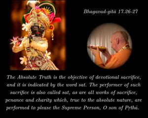
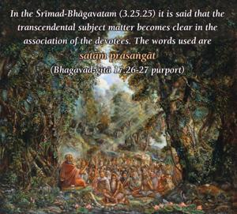
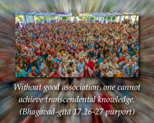
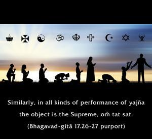
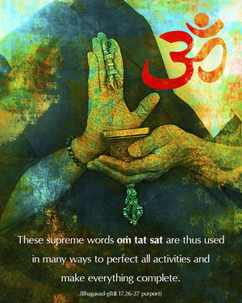

The Absolute Truth is the objective of devotional sacrifice, and it is indicated by the word sat. The performer of such sacrifice is also called sat, as are all works of sacrifice, penance and charity which, true to the absolute nature, are performed to please the Supreme Person, O son of Pṛthā.





The words praśaste karmaṇi, or “prescribed duties,” indicate that there are many activities prescribed in the Vedic literature which are purificatory processes, beginning from the time of conception up to the end of one’s life. Such purificatory processes are adopted for the ultimate liberation of the living entity. In all such activities it is recommended that one vibrate oṁ tat sat. The words sad-bhāve and sādhu-bhāve indicate the transcendental situation. Acting in Kṛṣṇa consciousness is called sattva, and one who is fully conscious of the activities of Kṛṣṇa consciousness is called a sādhu. In the Śrīmad-Bhāgavatam (3.25.25) it is said that the transcendental subject matter becomes clear in the association of the devotees. The words used are satāṁ prasaṅgāt. Without good association, one cannot achieve transcendental knowledge. When initiating a person or offering the sacred thread, one vibrates the words oṁ tat sat. Similarly, in all kinds of performance of yajña the object is the Supreme, oṁ tat sat. The word tad-arthīyam further means offering service to anything which represents the Supreme, including such service as cooking and helping in the Lord’s temple, or any other kind of work for broadcasting the glories of the Lord. These supreme words oṁ tat sat are thus used in many ways to perfect all activities and make everything complete.